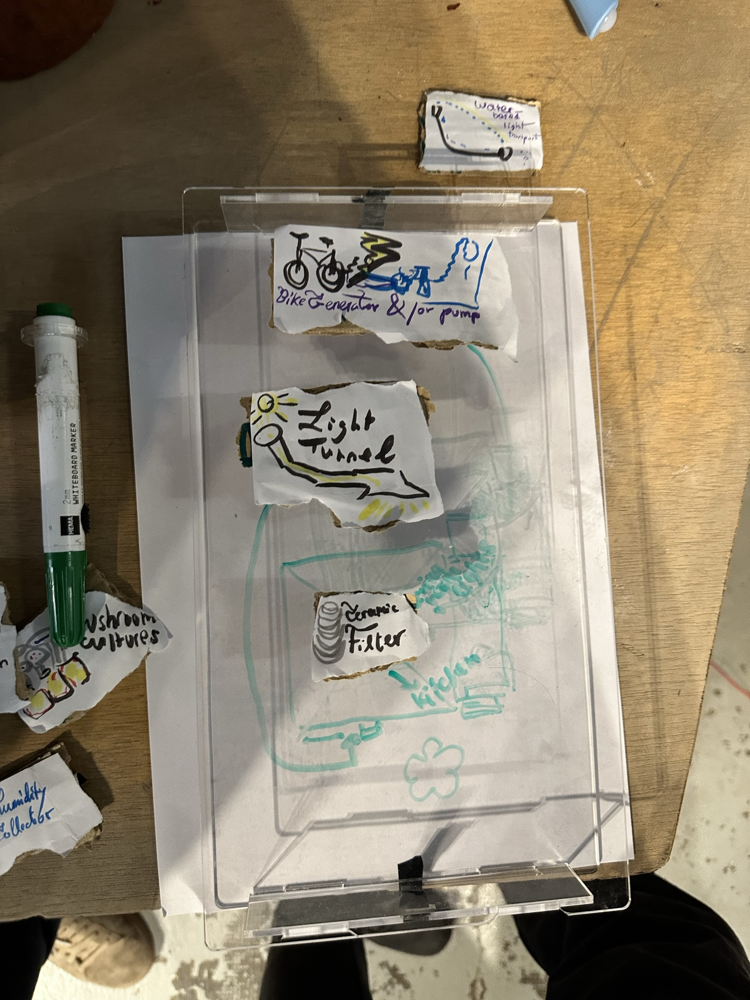
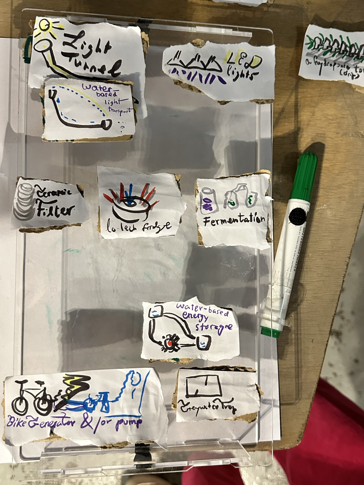
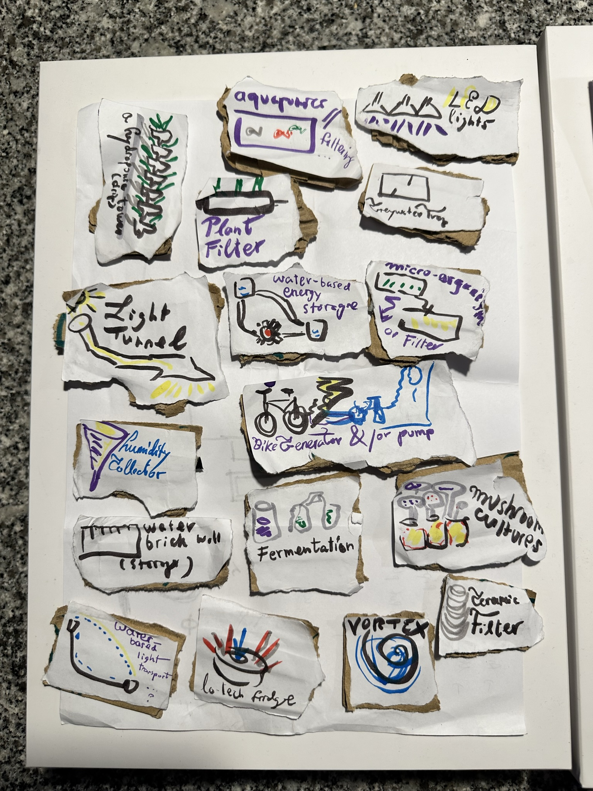

Measuring the world¶
In this course we were invited to question some assumptions we might have about data, and learn how to collect, analyse, and commmunicate it.
Unfortunately, due to circumstances beyond my control, I missed the second half of it. This is why I chose to do an individual project in addition to my participation in a group project (which was limited by my absence).
the collective project¶
Together with Amanda, Claudia, Ahmed, and Caglar, we chose the topic of work/life ‘balance’. This topic is closely related to my term 1 focus of playful production (see, e.g. the design studio term 2 page). More concretely, we focused on the following hypothesis: people lack the time and energy to pursue their passions outside of work.
I participated actively in the initial brainstorming and testing of ways to find a proxy for the time people spend working or going about leisurely pursuits. We decided to use the difference between artificial and natural light, assuming an office work environment and an outdoor leisure bias. There are obviously many issues with using this as a proxy, but it seemed like an interesting way to start.
You can read more about the process in our collective repository.
Due to the impossibility of participating in part of the collective project, I decided to do an artefact-based data collection at the second MDEF Design Dialogues (our end-of-trimester exhibit).
an individual exploration (at the dialogues)¶
This data collection effort is related to a collective project about water, where we built an initial prototype of a system of greywater-reuse and plant-based water filtration for urban horticulture. As an extension of the aspects of this project that I find most interesting (and which I want to explore in the last trimester), I decided to ask people about which artefacts they would (like to) put in their domestic space. I was interested in both how often objects would be selected, and the reasons people give as to why.
The setup was very simple:

The only digitally manufactured part is a (repurposed) laser cut acrylic box, where participants could - if they so desired - draw their current or projected domestic space (to help imagine the situation, and keep it somewhat realistic in terms of space etc).
The way participants interacted with this (customised) space were hand-drawn paper and cardboard-based tokens symbolising various objects they might want to put in there.

the object tokens¶
Seventeen objects were featured as possible objects to include or exclude in the participant’s domestic spaces.

the results will be posted here shortly.
limitations, biases, etc¶
the results: quantitative¶
- greywater trap
- water-based energy storage
- LED lights
- micro-organisms as filter
- bike generator & or pump
- plant filter
- mushroom cultures
- fermentation
- light tunnel
- aquaponics
- vortex
- water based light transport
- humidity collector
- water brick storage
- low-tech fridge
- hydroponic tower
- ceramic filter